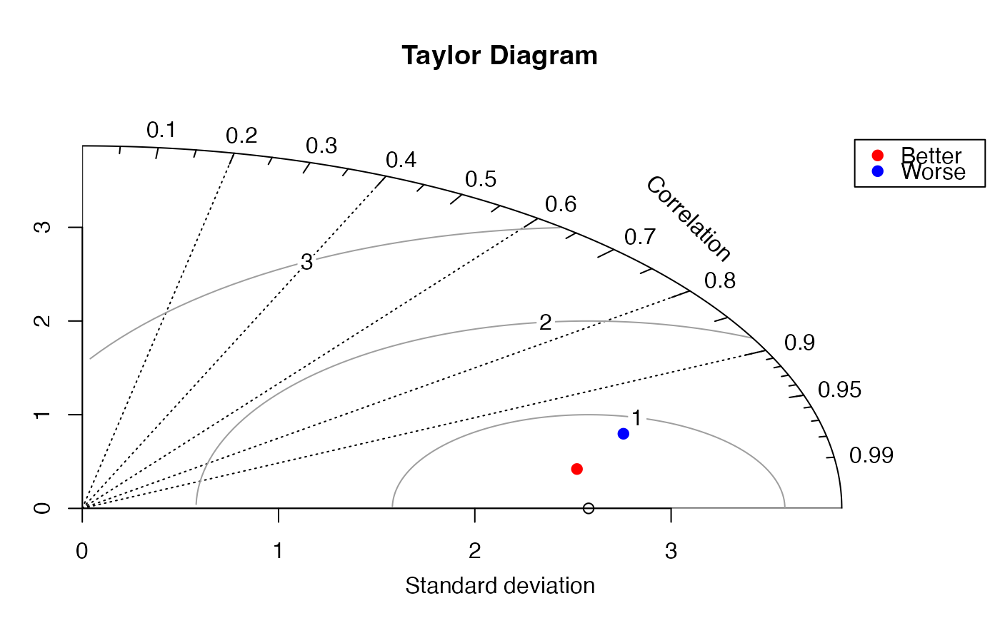
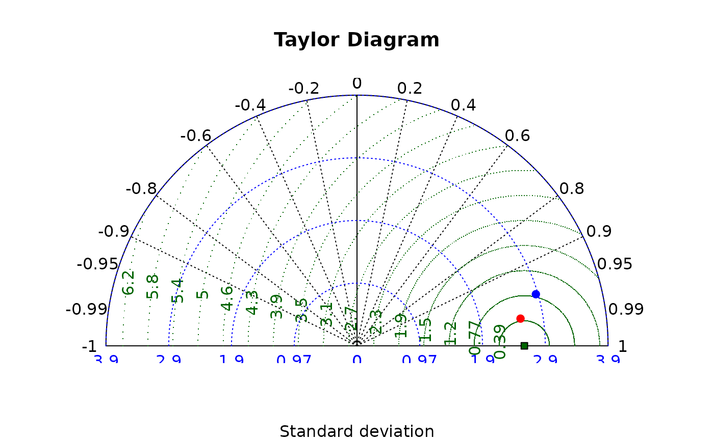

Taylor diagram
taylor.diagram.RdDisplay a Taylor diagram
Arguments
- ref
numeric vector - the reference values.
- model
numeric vector - the predicted model values.
- add
whether to draw the diagram or just add a point.
- col
the color for the points displayed.
- pch
the type of point to display.
- pos.cor
whether to display only positive (TRUE) or all values of correlation (FALSE).
- xlab,ylab
plot axis labels.
- main
title for the plot.
- show.gamma
whether to display standard deviation arcs around the reference point (only for pos.cor=TRUE).
- ngamma
the number of gammas to display (default=3).
- gamma.col
color to use for the gamma arcs (only with pos.cor=TRUE).
- sd.arcs
whether to display arcs along the standard deviation axes (see Details).
- ref.sd
whether to display the arc representing the reference standard deviation.
- sd.method
Whether to use the sample or estimated population SD.
- grad.corr.lines
the values for the radial lines for correlation values (see Details).
- pcex
character expansion for the plotted points.
- cex.axis
character expansion for the axis text.
- normalize
whether to normalize the models so that the reference has a standard deviation of 1.
- mar
margins - only applies to the pos.cor=TRUE plot.
- ...
Additional arguments passed to plot.
Details
The Taylor diagram is used to display the quality of model predictions against the reference values, typically direct observations.
A diagram is built by plotting one model against the reference, then adding alternative model points. If normalize=TRUE when plotting the first model, remember to set it to TRUE when plotting additional models.
Two displays are available. One displays the entire range of correlations from -1 to 1. Setting pos.cor to FALSE will produce this display. The -1 to 1 display includes a radial grid for the correlation values. When pos.cor is set to TRUE, only the range from 0 to 1 will be displayed. The gamma lines and the arc at the reference standard deviation are optional in this display.
Both the standard deviation arcs and the gamma lines are optional in the pos.cor=TRUE version. Setting sd.arcs or grad.corr.lines to zero or FALSE will cause them not to be displayed. If more than one value is passed for sd.arcs, the function will try to use the values passed, otherwise it will call pretty to calculate the values.
Value
The values of par that preceded the function. This allows the user to add points to the diagram, then restore the original values. This is only necessary when using the 0 to 1 correlation range.
References
Taylor, K.E. (2001) Summarizing multiple aspects of model performance in a single diagram. Journal of Geophysical Research, 106: 7183-7192.
Examples
# fake some reference data
ref<-rnorm(30,sd=2)
# add a little noise
model1<-ref+rnorm(30)/2
# add more noise
model2<-ref+rnorm(30)
# display the diagram with the better model
oldpar<-taylor.diagram(ref,model1)
# now add the worse model
taylor.diagram(ref,model2,add=TRUE,col="blue")
# get approximate legend position
lpos<-1.5*sd(ref)
# add a legend
legend(lpos,lpos,legend=c("Better","Worse"),pch=19,col=c("red","blue"))

# now restore par values
par(oldpar)
# show the "all correlation" display
taylor.diagram(ref,model1,pos.cor=FALSE)
taylor.diagram(ref,model2,add=TRUE,col="blue")
